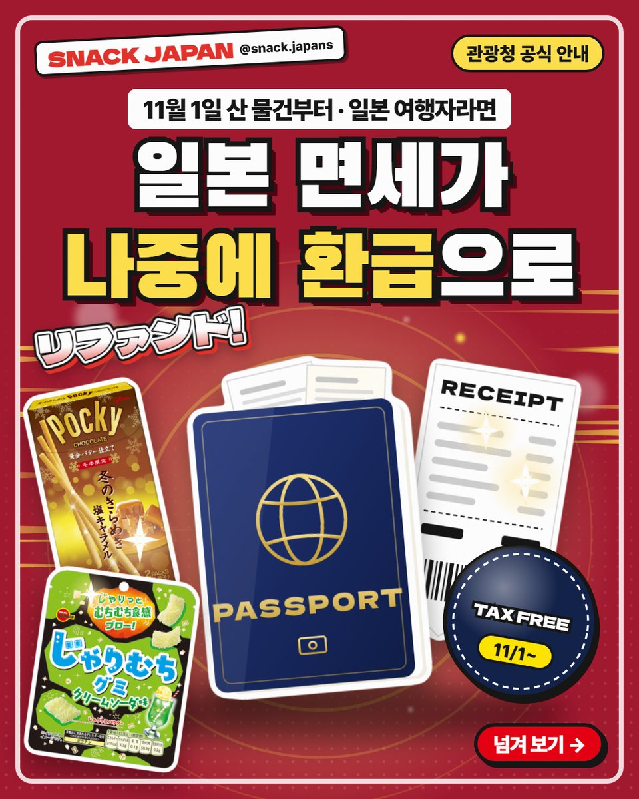
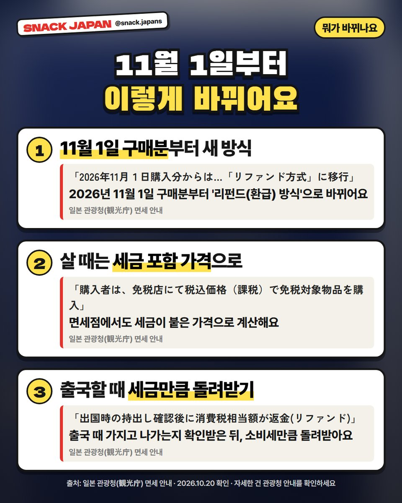
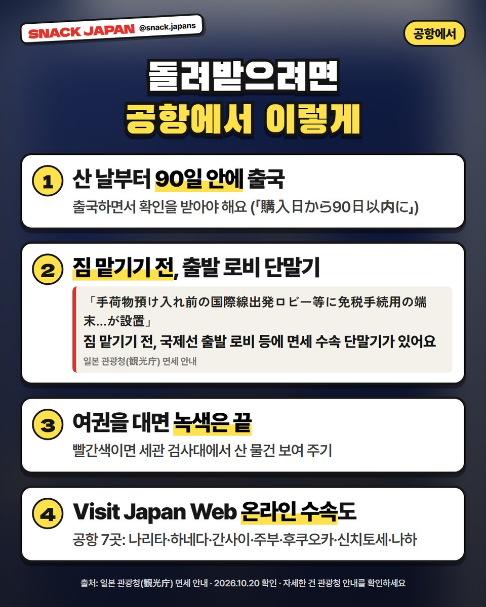
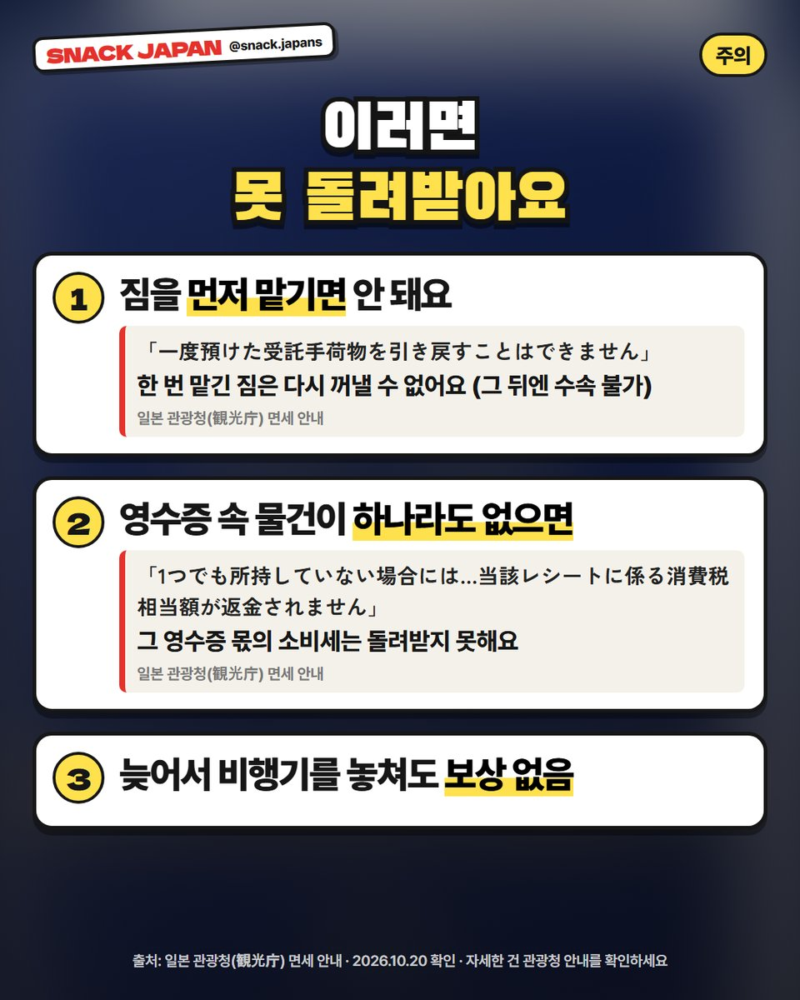
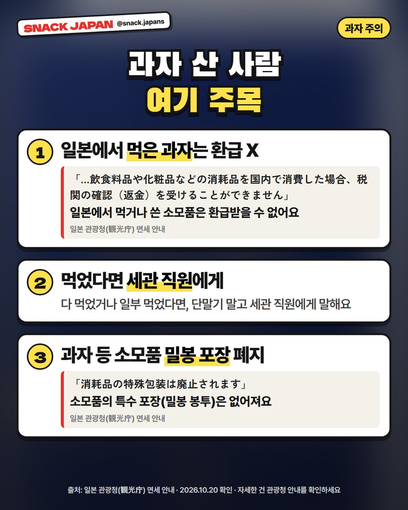
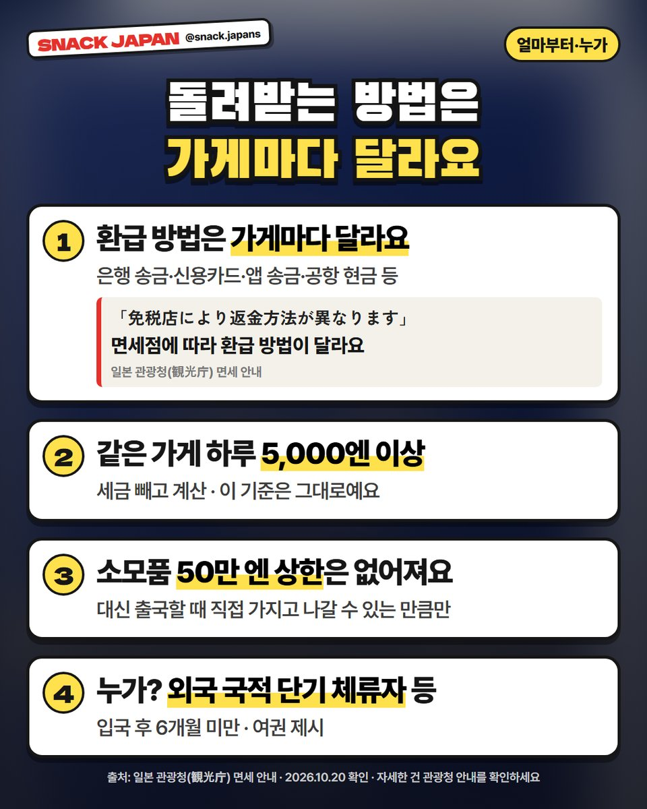
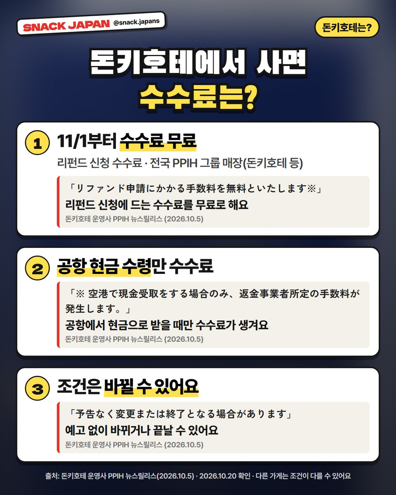

일본 면세 리펀드 방식 11월 1일부터 시작, 과자 산 사람 꼭 알아 둘 것
면세가 없어지는 게 아니라 '나중에 돌려받는' 방식으로 바뀌어요. 일본에서 먹은 과자는 환급 대상이 아니래요!
11월 1일부터 일본 면세가 바뀌어요 🧾
면세가 없어지는 게 아니라,
'나중에 돌려받는 방식(리펀드 방식)'으로 바뀌는 거예요.
일본 관광청(観光庁) 안내를 기준으로 정리했어요!


1. 뭐가 바뀌나요?
- 언제부터: 2026년 11월 1일에 산 물건부터
- 살 때: 면세점에서도 세금이 붙은 가격으로 계산해요
- 돌려받을 때: 출국할 때 가지고 나가는지 확인받은 뒤, 소비세만큼 돌려받아요

2. 공항에서는 이렇게
- 산 날부터 90일 안에 출국하면서 확인을 받아야 해요
- 짐 맡기기 전, 국제선 출발 로비 등에 있는 면세 수속 단말기에 여권을 대요
- 녹색이면 끝, 빨간색이면 세관 검사대에서 산 물건을 보여 줘요
- 나리타·하네다·간사이·주부·후쿠오카·신치토세·나하 공항은 Visit Japan Web으로 온라인 수속도 돼요 (보안 검사 전 출발 로비의 전용 와이파이 구역에서)
- 국내선에서 국제선으로 갈아탄다면, 마지막에 출국하는 공항에서 수속해요

3. 이러면 못 돌려받아요
- 짐을 먼저 맡기면 안 돼요. 한 번 맡긴 짐은 다시 꺼낼 수 없고, 그 뒤엔 수속을 못 해요
- 한 영수증의 물건 중 하나라도 없으면, 그 영수증 몫의 소비세는 돌려받지 못해요
- 늦어서 비행기를 놓쳐도 보상은 없어요

4. 과자 산 사람, 여기 주목!
과자 좋아하는 분들한테 제일 중요한 부분이에요.
- 일본에서 먹거나 쓴 소모품(과자·화장품 등)은 환급받을 수 없어요
- 다 먹었거나 일부 먹었다면, 단말기 말고 세관 직원에게 말해요
- 과자 같은 소모품의 특수 포장(밀봉 봉투)은 없어져요
관광청 안내 원문은 「飲食料品や化粧品などの消耗品を国内で消費した場合、税関の確認（返金）を受けることができません」이에요.

5. 돌려받는 방법·누가
- 환급 방법은 가게마다 달라요: 은행 송금·신용카드·앱 송금·공항 현금 등
- 가게나, 가게가 맡긴 환급 업체가 돌려줘요
- 누가: 외국 국적 단기 체류자(입국 후 6개월 미만) 등, 여권 제시
- 소모품 상한은 없어지고, 대신 출국할 때 직접 가지고 나갈 수 있는 만큼만이에요
- 같은 가게·하루 구매 금액 기준은 그대로예요. 얼마부터인지는 사진 카드에 정리해 뒀어요

6. 돈키호테에서 사면?
돈키호테 운영사 PPIH 발표(10월 5일)예요.
- 11월 1일부터 전국 PPIH 그룹 매장(돈키호테 등)에서 리펀드 신청 수수료 무료
- 단, 공항에서 현금으로 받을 때만 환급 업체 수수료가 생겨요
- 조건은 예고 없이 바뀌거나 끝날 수 있대요
- 다른 가게는 조건이 다를 수 있어요
7. 한국어 안내문도 있어요
일본 관광청 홈페이지에 한국어 안내문(리플릿)도 올라와 있어요.
자세한 건 관광청 안내를 확인하세요.
총평
- 기준: 10월 20일 확인한 일본 관광청(観光庁) 면세 안내, 돈키호테 운영사 PPIH 발표
- 참고: 표지 그림의 여권·영수증은 직접 그린 그림이에요
- 추천: 11월 이후 일본 여행 가는 분, 일본에서 과자·기념품 많이 사는 분
11월에 일본 가는 분, 어느 공항으로 나가세요? ✈️